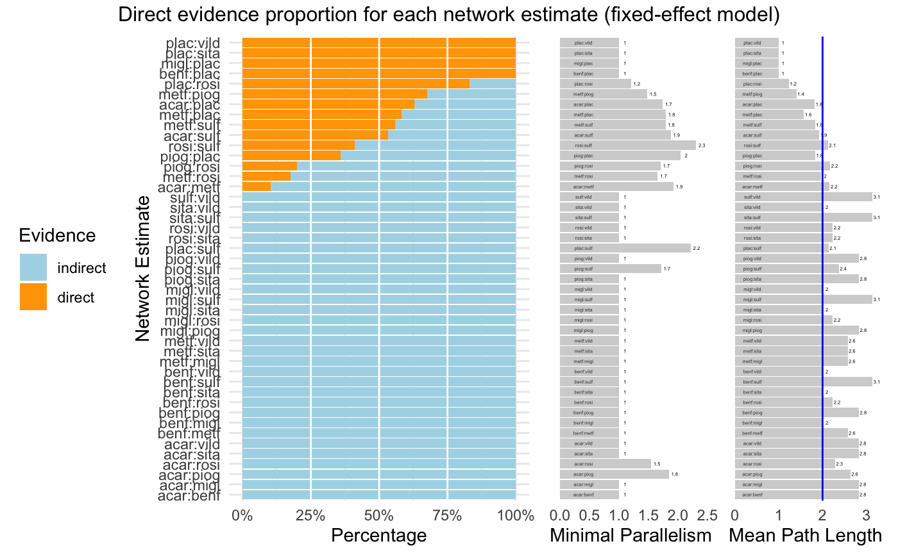

netmetaR/direct.evidence.plot.R
direct.evidence.plot.RdThis function plots relevant measures quantifying the direct evidence proportion, mean path length
and aggregated minimal parallelism of a frequentist network meta-analysis model generated by
netmeta.
direct.evidence.plot(x, random=FALSE, comparison.label.size=2, numeric.label.size=3, subplot.ratio=c(5, 1.3, 1.3))
| x | An object of class |
|---|---|
| random | Logical. If set to |
| comparison.label.size | A numeric value for the size of comparison labels
to be used in the plot. Default is |
| numeric.label.size | A numeric value for the label size of numeric values
to be used in the plot. Default is |
| subplot.ratio | A numeric vector containing three numbers. Defines the width for each of
the three subplots included in the plot (from left to right). Default is |
data: A data.frame containing columns for the proportion of direct and indirect
evidence of each comparison (proportion.direct and proportion.indirect), the
mean path length (meanpath) and the minimal parallelism (minpar)
for each comparison.
plot: The generated plot (if the function output was saved to an object).
The function generates a plot containing three subplots displaying relevant characteristics to evaluate the reliability of effect size estimates within a network meta-analysis model.
Direct Evidence Proportion. This bar chart displays the proportion of direct evidence (orange) contained in each network estimate. It is of note that both direct and indirect evidence may contribute to the violation of the assumption of consistency underlying network meta-analysis models. Nevertheless, this plot allows to distinguish comparison estimates for which direct evidence was used, and to what extent, and comparisons which had to be inferred by indirect evidence alone.
Minimal Parallelism. This bar chart displays the minimum number of independent paths contributing to the effect estimate on an aggregated level. Large values of parallelism can be interpreted as supporting the robustness of the estimate.
Mean Path Length. This bar chart displays the mean path length, which characterizes the degree of indirectness of an estimate. Higher mean path lengths indicate less reliable estimates, given that more similarity assumptions have to be made when serially combining direct comparisons. Following König, Krahn and Binder (2013), comparisons with mean path lengths greater than two should be interpreted with caution. This threshold is displayed as a blue vertical line in the plot.
Harrer, M., Cuijpers, P., Furukawa, T.A, & Ebert, D. D. (2019). Doing Meta-Analysis in R: A Hands-on Guide. DOI: 10.5281/zenodo.2551803. Chapter 11.1
König J., Krahn U., Binder H. (2013): Visualizing the flow of evidence in network meta-analysis and characterizing mixed treatment comparisons. Statistics in Medicine, 32, 5414–29
# Load Senn2013 data from netmeta suppressPackageStartupMessages(library(netmeta)) data(Senn2013) # Conduct network meta-analysis (fixed-effects model) nma = netmeta(TE, seTE, treat1, treat2, studlab, data=Senn2013, sm='MD', comb.random=FALSE) # Generate the plot dep = direct.evidence.plot(nma, random=FALSE, comparison.label.size = 1, numeric.label.size=1, subplot.ratio=c(3,1,1)) dep#> Direct Evidence Proportion for each Network Estimate #> ------------------------------------------------- #> Direct Indirect meanpath minpar #> benf:plac 1.0000 0.0000 1.000000 1.000000 #> migl:plac 1.0000 0.0000 1.000000 1.000000 #> plac:sita 1.0000 0.0000 1.000000 1.000000 #> plac:vild 1.0000 0.0000 1.000000 1.000000 #> plac:rosi 0.8317 0.1683 1.232039 1.202321 #> metf:piog 0.6760 0.3240 1.406080 1.479374 #> acar:plac 0.6283 0.3717 1.821171 1.741244 #> metf:plac 0.5827 0.4173 1.575341 1.793512 #> metf:sulf 0.5592 0.4408 1.827966 1.788188 #> acar:sulf 0.5331 0.4669 1.924880 1.875690 #> rosi:sulf 0.4106 0.5894 2.126199 2.305411 #> piog:plac 0.3578 0.6422 1.831364 2.038564 #> piog:rosi 0.1995 0.8005 2.175930 1.703670 #> metf:rosi 0.1750 0.8250 1.965334 1.657166 #> acar:metf 0.1025 0.8975 2.161838 1.921063 #> acar:benf 0.0000 1.0000 2.821171 1.000000 #> acar:migl 0.0000 1.0000 2.821171 1.000000 #> acar:piog 0.0000 1.0000 2.636489 1.843204 #> acar:rosi 0.0000 1.0000 2.287610 1.543073 #> acar:sita 0.0000 1.0000 2.821171 1.000000 #> acar:vild 0.0000 1.0000 2.821171 1.000000 #> benf:metf 0.0000 1.0000 2.575341 1.000000 #> benf:migl 0.0000 1.0000 2.000000 1.000000 #> benf:piog 0.0000 1.0000 2.831364 1.000000 #> benf:rosi 0.0000 1.0000 2.232039 1.000000 #> benf:sita 0.0000 1.0000 2.000000 1.000000 #> benf:sulf 0.0000 1.0000 3.138291 1.000000 #> benf:vild 0.0000 1.0000 2.000000 1.000000 #> metf:migl 0.0000 1.0000 2.575341 1.000000 #> metf:sita 0.0000 1.0000 2.575341 1.000000 #> metf:vild 0.0000 1.0000 2.575341 1.000000 #> migl:piog 0.0000 1.0000 2.831364 1.000000 #> migl:rosi 0.0000 1.0000 2.232039 1.000000 #> migl:sita 0.0000 1.0000 2.000000 1.000000 #> migl:sulf 0.0000 1.0000 3.138291 1.000000 #> migl:vild 0.0000 1.0000 2.000000 1.000000 #> piog:sita 0.0000 1.0000 2.831364 1.000000 #> piog:sulf 0.0000 1.0000 2.372372 1.712385 #> piog:vild 0.0000 1.0000 2.831364 1.000000 #> plac:sulf 0.0000 1.0000 2.138291 2.215596 #> rosi:sita 0.0000 1.0000 2.232039 1.000000 #> rosi:vild 0.0000 1.0000 2.232039 1.000000 #> sita:sulf 0.0000 1.0000 3.138291 1.000000 #> sita:vild 0.0000 1.0000 2.000000 1.000000 #> sulf:vild 0.0000 1.0000 3.138291 1.000000